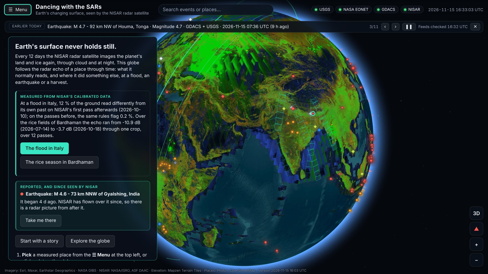
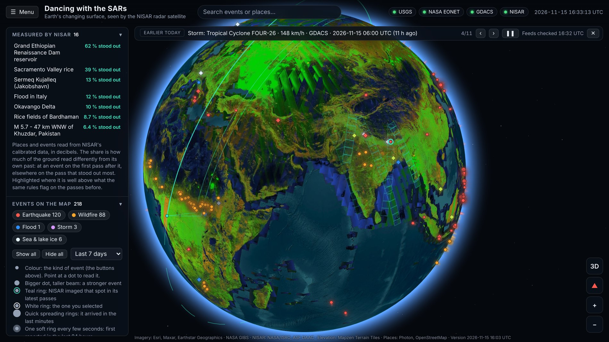
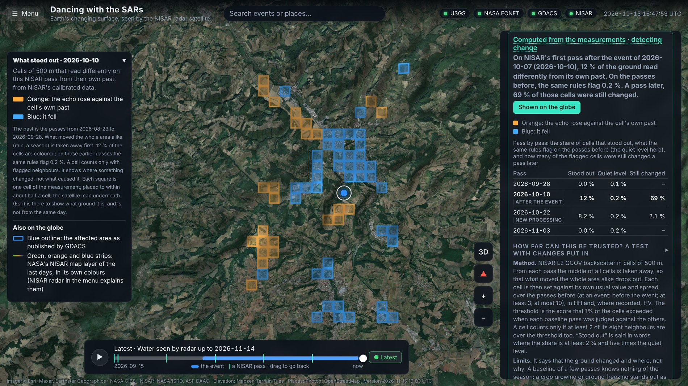
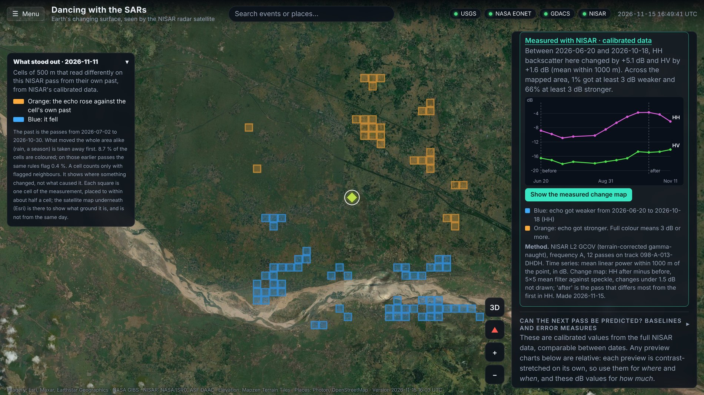

NASA Space Apps Challenge 2026 · Challenge: Dancing with the SARs
Dancing
with the SARs
A live globe that shows what a place normally reads on NISAR's radar, and where the ground did something else.
Team: Dancing with the SARs
Members: LucidPaths · trisrota-commits · MadhuraSaha02
The challenge, and our answer
“Track and visualize surface change at locations around the world” with NISAR
- The problem. After a flood, an earthquake or a failed harvest, the first question is where the ground changed. Cameras in orbit are blind under cloud, in smoke and at night.
- NISAR's radar sees through all three, every 12 days. But a radar picture is hard to read, and its measurements sit in files that need special software.
- Our answer: an interactive change-detection map on a 3D globe. It turns NISAR's data into a statement a decision-maker can use: this much of the ground changed, here, and this is what is ordinary.
- For whom: disaster and aid organisations first; farm advisers; teachers and the public.

What we built · how someone uses it
Three steps from a reported event to what the radar measured
- Open the globe. Live earthquakes, floods, fires and storms (USGS, NASA EONET, GDACS) on NISAR's radar picture of the planet.
- Pick an event or a place. A timeline puts NISAR's passes before and after it on the ground. Any other spot on land gives a time-lapse of every pass there.
- Read what stood out. Where we have measured: the share of the ground that changed, a map of where, and the series in decibels behind it.

Change detection · a flood in Italy, October 2026
Three days after the flood was reported, 12 % of the ground stood out. Before: 0.2 %
| NISAR pass | Stood out | |
|---|---|---|
| 28 September | 0.0 % | before |
| 10 October | 12 % | 3 days after |
| 22 October | 8.2 % | |
| 3 November | 0.0 % | as before |
Why might it look like this? Blue cells: the echo fell, which is what standing water does to radar (it sends the pulse away). Orange: it rose, as wet soil does. A hypothesis, and the app labels it as one: the map says where, not why.

Time series · farming · rice fields of Bardhaman, West Bengal
One rice season in two polarisations: flooded in July, tall in October, harvested in November
- HH, −10.9 dB in July: the paddies are under water, and smooth water sends little back.
- HH, −3.7 dB in October: the rice stands tall; the echo is five times as strong.
- HV rises with the crop and stays up: the channel that leaves and stems send back.
- November, the harvest: HH falls again, and 8.7 % of the ground stands out.
12 passes, 1,024 cells. The place's text in the app said to expect this before the data existed.

Validity · how the detector works and how far it can be trusted
We measured the detector instead of asserting it
How it works
- Each 500 m cell against its own baseline of earlier passes, in HH and HV, after taking away what moved the whole area (rain, season).
- A fixed false-alarm rate of 1 cell in 100, set from the passes before; only clusters count.
- The method of NASA's OPERA DIST-ALERT for Sentinel-1, applied to NISAR.
The test
We put a change of known size into real, quiet passes and ran the detector on it. A drop of 3 dB over 2.5 km is found with recall 0.86 at precision 0.80. With nothing put in it flags 0.4 % of the cells.
What it cannot do
- One season of data. Where a place is itself changing (rice growing, a reservoir filling) recall falls to 0.44 at precision 0.12: it cannot yet tell a crop from a change.
- Seven events judged: the flood in Italy stood out; one earthquake shows 6 % on a pass we cannot read cleanly; five show nothing.
- Not the whole planet. A rough version from NASA's map picture, tested on 573 reported events, does not find them. It is not in the app.
- It says where the ground changed, never why.
Open data make it possible · what comes next
Built on NASA's and its partners' free and open data
Data we use
- NISAR (NASA and ISRO), from the Alaska Satellite Facility: calibrated backscatter (L2 GCOV), interferograms (L2 GUNW), found through NASA CMR.
- NASA GIBS: the daily NISAR map layer, and 15 context layers (water, fire, soil moisture, population).
- NASA EONET, USGS, GDACS: the events, as they are reported.
- ESA's Sentinel-1, through NASA's OPERA products: C-band beside NISAR's L-band.
What comes next
- A year of NISAR: a baseline that knows the seasons, so a crop no longer looks like a change.
- Every reported event measured automatically, and checked against what was mapped on the ground.
- More of NISAR: soil moisture and ground movement next to backscatter.
Two faults we found in NASA's data are handled and written up: 43 % of sampled NISAR map tiles arrive damaged, and some data files hold strips with no signal.